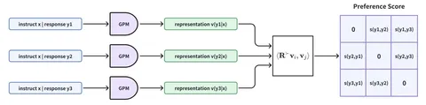
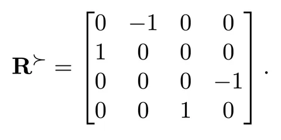

Врываемся в новый 2025-й с новым разбором. Сегодня рассмотрим, как использование теории игр помогает в RLHF. Авторы статьи назвали свой метод General Preference Modeling (GPM). Он подходит для RLHF, но всё сказанное в статье применимо и к RL общего назначения с моделью предпочтений.
RLHF-обучение состоит из двух шагов: получение модели предпочтений и обучение генеративной модели. Авторы сосредоточились на улучшении модели предпочтений.
Традиционно такая модель учится как модель Брэдли-Терри. В ней каждому возможному ответу LLM присваивается некоторый скаляр, отражающий его качество. Утверждается, что пользователь предпочитает ответы с более высоким качеством. При этом подходе ответы получаются линейно упорядоченными и всегда можно найти лучший, что несомненный плюс.
Из недостатков — модель предполагает, что функция предпочтений человека всегда описывается достаточно простой моделью Брэдли-Терри, в которой всегда есть лучшие и худшие ответы. На практике же несколько ответов могут образовывать нетранзитивный цикл. Скажем, при игре в «Камень-ножницы-бумага» нет лучшего действия, однако модель всё равно попытается их упорядочить.
Чтобы решить эту проблему, авторы обращаются к теории игр. На самом деле эта идея не нова. Скажем, были уже модели попарных сравнений, которые работали не от оценки одного ответа, а от сравнения двух вариантов. У такого подхода тоже есть существенные недостатки — это удар по производительности и отсутствие гарантии антисимметричности. То есть попарная модель должна оценивать, насколько первый ответ лучше второго противоположным числом оценки превосходства второго ответа над первым.
Свой подход авторы статьи строят на основе эмбеддингов. В отличие от модели Брэдли Терри, где каждому ответу приписывается скаляр, здесь приписывается некоторый эмбеддинг. После этого с помощью любой антисимметричной билинейной формы от эмбедингов двух ответов происходит проверка факта, что один из них лучше другого. В такой модели по построению выполняется свойство антисимметричности. Также авторы предлагают конкретный вид для билинейной формы, обеспечивающий простоту вычисления.
В случае, если эмбеддинг состоит из двух скаляров, авторы предлагают в качестве антисимметричного билинейного оператора использовать матрицу поворота на 90 градусов в двухмерном пространстве. А для случаев с большей размерностью эмбеддингов — строить блочно-диагональные матрицы с вышеописанными матрицами поворота на диагонали (вторая картинка выше). Такой оператор способен моделировать циклы в предпочтениях пользователей, располагая эмбеддинги на окружности.
Далее оптимизация языковой модели в соответствии с предпочтениями пользователя представляется в виде матричной игры, где разные LLM играют друг с другом. Выигрыш считается в соответствии с полученной ранее моделью предпочтений как среднее значение предложенной билинейной формы от эмбэддингов ответов двух соревнующихся моделей. Равновесием по Нэшу для такой игры будет модель, которая в среднем обыгрывает все остальные. Эту модель и предлагают искать авторы статьи, для чего адаптируют итеративный алгоритм из теории игр.
Оказывается, что шаг полученного алгоритма эквивалентен запуску классического RL-обучения. Здесь reward для конкретного ответа считается как среднее значение билинейной формы предпочтений для первого ответа и ответа, сгенерированного моделью с предыдущего шага этого алгоритма. К сожалению, на практике среднее значение билинейной формы не берётся из-за необходимости сэмплировать ответы из модели с предыдущего шага. Поэтому авторы в своём алгоритме используют Монте-Карло оценку этого среднего.
Тестирование показало, что обобщённая модель предпочтений даёт большую точность на циклических датасетах, но на стандартных результат сопоставим с тем, который показывают классические методы. Однако при использовании новой reward-функции в RL качество генеративной модели значительно улучшается.
Разбор подготовил
Душный NLP
